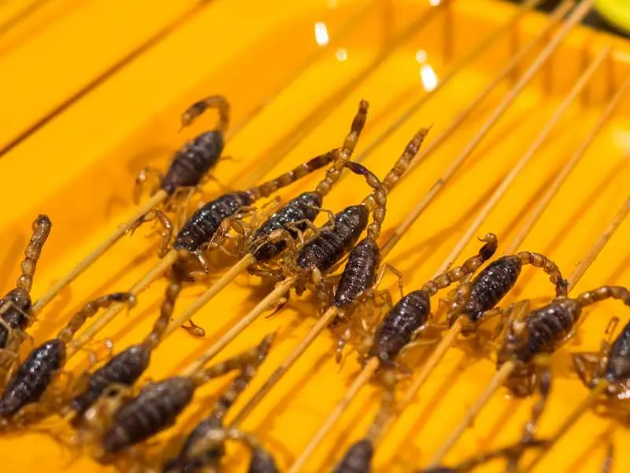

Deep-Fried Scorpion

Deep-fried Scorpion is a Chinese dish made with, you guessed it, a deep-fried whole scorpion, typically served as a street food or snack.
The scorpions used are usually harvested from the wild and are considered a delicacy in some regions of China.
The dish is often served as a crispy snack and is sometimes accompanied by dipping sauces or seasonings to enhance the flavor.
Ingredients
- 4 live scorpions
- 1 cup all-purpose flour
- 1 egg
- 1 cup panko breadcrumbs
- Salt and pepper - to taste
- Vegetable oil - for frying
Steps
- Clean the scorpions thoroughly and remove their stingers.
- Take a shallow dish and beat egg in it.
- Take a separate shallow dish, and add salt, flour, and pepper in it. Combine all the ingredients well.
- Take another shallow dish and add panko breadcrumbs in it.
- Dip each scorpion into the flour mixture, then into the beaten egg, and finally into the panko breadcrumbs. Make sure the scorpions are thoroughly coated with breadcrumbs.
- Take a deep frying pan and add vegetable oil in it. Heat the oil over a medium flame until it reaches 350°F.
- Fry the scorpions in the hot oil for 2 to 3 minutes, or until they are golden brown.
- Remove the scorpions from the oil and drain them on paper towels.
- Serve the scorpions hot and enjoy!
<< Previous recipe Next Recipe >>
Return to Main Page